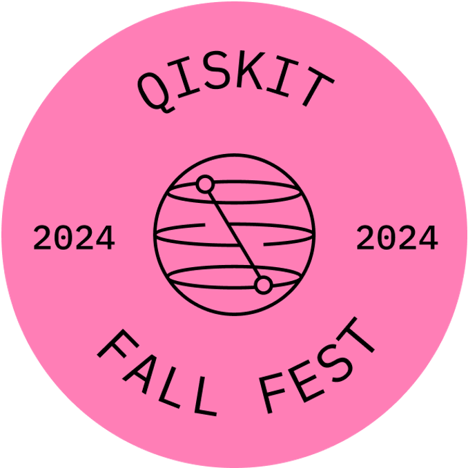
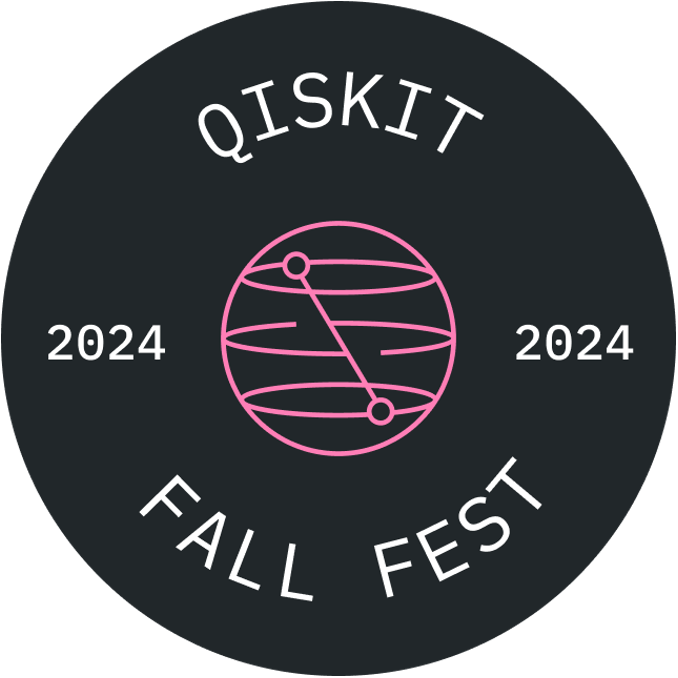

About


The Qiskit Fall Festival @ Yonsei is an annual event at Yonsei University hosted by QIYA(Quantum Informatics at Yonsei Academy). Our mission is to bring students, researchers, and industry professionals together . Whether you're an expert or just starting your quantum journey, you'll find inspiring talks, hands-on workshops, and invaluable networking opportunities. Join us as we dive into the latest advancements in quantum algorithms, hardware, and software.